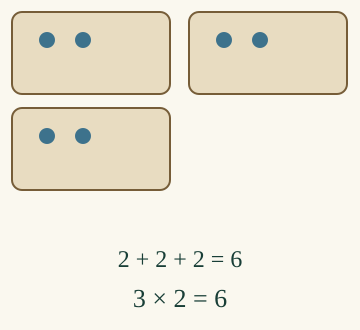

<link rel="stylesheet" href="lesson.css">


<section data-teaching-step="1" data-lesson-role="teaching-step">
<p class="lesson-intro"> Loikka pakkaa kolme eväspussia. Jokaiseen tulee kaksi.</p>
<h2>Monta samanlaista ryhmää</h2><p><strong>Teen yhtä suuret ryhmät ja lasken niiden koko määrän.</strong></p>
<p>Laita kolmeen pussiin kaksi merkkiä kuhunkin. Yhdistä pussien sisällöt mielessäsi: <strong>2 + 2 + 2 = 6</strong>. Sama lyhyesti: <strong>3 × 2 = 6</strong>, kolme kertaa kaksi.</p>
<figure data-lesson-role="worked-example"><figcaption>3 kertoo ryhmien määrän. 2 kertoo yhden ryhmän määrän.</figcaption></figure>
</section>


<section data-teaching-step="2" data-lesson-role="teaching-step">
<h3>Ryhmien pitää olla yhtä suuria</h3><p>Pusseissa on 2, 3 ja 1. Yhteensä on kuusi, mutta jokaisessa ei ole kahta. Siirrä yksi kolmen pussista yhden pussiin: nyt on 2, 2 ja 2.</p>
</section>


<section data-teaching-step="3" data-lesson-role="teaching-step">
<section data-lesson-role="question"><p>Voiko kolme pussia ja kaksi kuhunkin laskea 3 + 2?</p><details data-lesson-role="answer"><summary>Katso perustelu</summary><p>Ei. Kolme kertoo pussien määrän. Sisällöt lasketaan 2 + 2 + 2.</p></details></section>
</section>


<section data-teaching-step="4" data-lesson-role="teaching-step">
<h3>Sama idea tarjottimilla</h3><p>Neljä tarjotinta, jokaisessa kolme: <strong>3 + 3 + 3 + 3 = 12</strong>, eli <strong>4 × 3 = 12</strong>. Jos vieressä on vielä kaksi irtonaista, ne lisätään vain kerran: 12 + 2 = 14.</p>
</section>


<section data-teaching-step="5" data-lesson-role="teaching-step">
<div data-multiply><p>Paperilla: piirrä kolme kahden ryhmää. Korjaa myös ryhmät 2, 3 ja 1 yhtä suuriksi muuttamatta yhteismäärää. Kirjoita ryhmistä toistuva yhteenlasku ja kertolasku.</p></div>
</section>


<section data-teaching-step="6" data-lesson-role="teaching-step">
<details data-lesson-role="hint"><summary>Apua</summary><p>Katso yksi ryhmä kerrallaan. Jokaisesta tulee yhteenlaskuun sama luku. Saat laskea kaikki, laskea ryhmittäin tai vastata heti, kun tiedät.</p></details>
</section>


<section data-teaching-step="7" data-lesson-role="teaching-step">
<details data-lesson-role="teaching-step"><summary>Tutki lisää</summary><p>Tee myös kaksi kolmen ryhmää. 2 × 3 on kuusi, kuten 3 × 2. Kokonaismäärä on sama, vaikka ryhmien määrä ja koko vaihtuivat. Molemmat laskut ovat tosia.</p></details>
</section>


<details data-lesson-role="teacher-note"><summary>Opettajalle ja ilman ruutua</summary><p>Vuosiluokat 1–2, procedure/atomic. Pakollinen M-ADD-01 antaa yhteenlaskun yhdistämismerkityksen. M-NUM-16:n hyppylukujono on vahva tuki; sitä tai ulkoa muistettua kertotaulua ei vaadita. Tässä merkinnässä ensin sanotaan ryhmien määrä ja sitten yhden ryhmän koko. Käänteinen tekijäjärjestys on lukuarvoltaan yhtä oikein, mutta sitä ei tässä testata vääränä semanttisena vaihtoehtona.</p><p>Ryhmäkohtaisilla määräsäätimillä oppilas rakentaa ja korjaa kuvan. Ne eivät ole esineiden nimeämistehtävä tai pakollisia laskutappeja. Yhteismäärä tarkistetaan erikseen: oikea summa ei peitä epätasaisia ryhmiä. Erillinen askelmalli on vapaaehtoinen eikä muuta harjoitusvastausta. Siirtotehtävän kaksi irtonaista ovat annettu lisäys, eivät osa jokaista ryhmää.</p><p>Offline: käytä kuppeja ja merkkejä. Vertaa 2, 2, 2 ja 2, 3, 1. Kuva ja lukuvastaus eivät osoita fyysistä pakkaamista, vapaata laskulauseen kirjoittamista, itsenäisyyttä tai pysyvää oppimista. Ei pisteitä tai oppijahistoriaa.</p></details>


<section data-teaching-step="8" data-lesson-role="teaching-step">
<p data-lesson-role="question"><strong>Lopuksi:</strong> mitä kolmonen ja kakkonen kertovat laskussa 3 × 2?</p>
</section>


